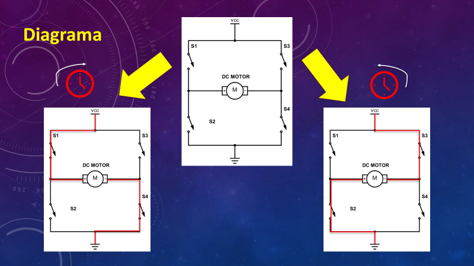

¿Qué es el Puente H?
Un puente H es un componente clave en el mundo de la electrónica y la robótica y entenderlo nos abre las puertas al mundo de control de motores.
Puedes imaginar el puente H como un "interruptor avanzado" que permite que un motor gire en ambas direcciones: hacia adelante y hacia atrás, en sentido de las manecillas del reloj y en contra de las manecillas del reloj. Es como el "cerebro" que le dice al motor qué hacer, y en el caso de nuestro carro controlado por Arduino, el puente H es el maestro que decide si el carro avanza, retrocede o se detiene. Es como el control remoto de nuestro proyecto, permitiéndonos tomar decisiones sobre el movimiento con precisión.

Siguiendo la analogía de "interruptor avanzado", el puente H tiene 4 interruptores que se configuran de tal manera, que al cerrar solo 2 de ellos, el interruptor S1 y el S4, el motor gira en un sentido, o al cerrar los otros 2 interruptores (S3 y S2), el motor gira en el sentido contrario.